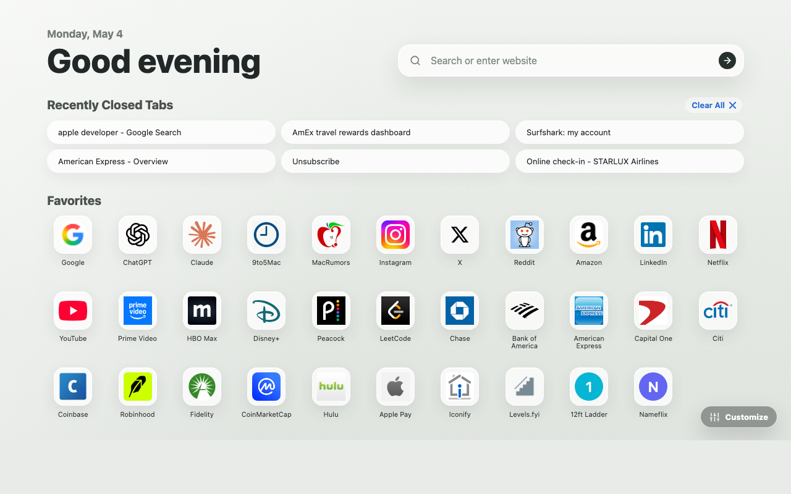

Your New Tab,
Reimagined.
An elegant, Safari-inspired personal dashboard for Chrome. Fast, private, and beautiful.

Everything you need.
Nothing you don't.
Favorites
Seamlessly integrated with Chrome bookmarks. Access your top sites instantly with beautiful, high-resolution icons.
Recently Closed
Recover sessions chronologically, or let Chrome's on-device Gemini rank and group them into the tasks you are most likely to resume.
Continue
Return to evidence-backed journeys from recent days, grouped privately on your device and hidden when there is no strong signal.
Custom Backgrounds
Make it yours. Choose from daily random photos, elegant gradients, or use your own beautiful local images.